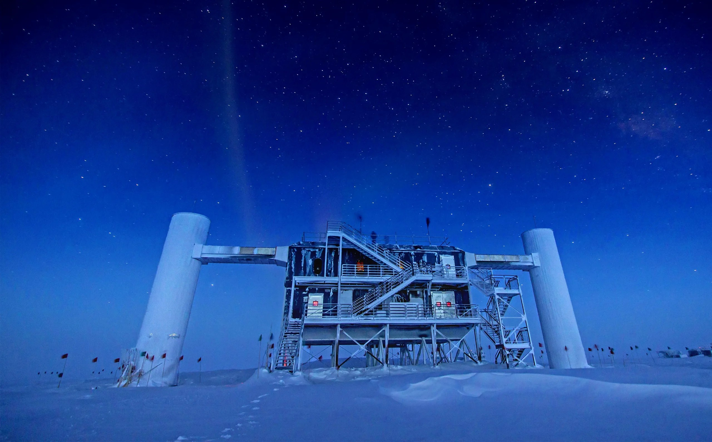

October 06, 2026
The 2026 Nobel Prize in Physics Goes to a Cubic Kilometer of Antarctic Ice

Felipe Pedreros / IceCube / NSF (via Quanta Magazine)
The 2026 Nobel Prize in Physics has been awarded to Francis Halzen, the Belgian-American physicist whose decades-long vision turned a cubic kilometer of Antarctic ice into one of astronomy's strangest and most powerful telescopes.
The announcement
The Royal Swedish Academy of Sciences announced the prize on Tuesday, October 6, 2026, honoring Halzen for what the citation calls his "decisive contributions to the IceCube Neutrino Observatory and the discovery of high-energy neutrinos of astrophysical origin."
Halzen, 82, a professor at the University of Wisconsin–Madison, learned of the award by phone while in Italy. He told the Nobel news conference it was "a great surprise and a pleasure," adding that when the project began, "very few thought it would work, including myself." It was, he said, "kind of an adventure where success wasn't guaranteed."
Nobel committee chair Mark Pearce praised "his tenacity and scientific vision," saying Halzen "has paved the way for a new kind of astronomy."
The ghost particles
The prize is about neutrinos — subatomic particles often called "ghost particles" because they pass through matter almost entirely undisturbed. They carry almost no mass and no electric charge, and they fly through stars, planets, and entire galaxies unchanged. Trillions stream through your body every second, most of them from the Sun.
Halzen's focus was a far rarer breed: high-energy neutrinos born in the most violent places in the universe — exploding stars, black-hole-powered galaxies, and other extreme engines. Because neutrinos travel in straight lines without being deflected or absorbed, they can carry information about those distant sources that no other messenger can.
The problem: they are spectacularly hard to catch. A neutrino can cross the entire Earth without interacting with a single atom.
A telescope made of ice
Halzen's audacious proposal, first presented in 1988, was to use the clear, deep ice at the South Pole as the detector itself. The IceCube Neutrino Observatory is exactly that: roughly a cubic kilometer of Antarctic ice, threaded with strings of thousands of light sensors frozen about two kilometers below the surface, drilled into place using hot water.
When one of those rare high-energy neutrinos does collide with an atomic nucleus in the ice, it produces a flash of blue light — Cherenkov radiation. The sensor grid records the flash and reconstructs the neutrino's trajectory, tracing it back toward its cosmic origin.
What started as one person's sketch became an international collaboration of more than 450 researchers and engineers from 58 institutions in 14 countries. IceCube's detections of astrophysical neutrinos have since opened a genuine new branch of astronomy — one that doesn't see light at all, but listens to the universe's ghostliest messengers.
Why it matters
"Messengers bring information from the cosmos," committee member Eva Olsson said at the announcement. "They open the door to distant galaxies and tell us about the processes of exploding stars."
The physics prize is the second of this year's Nobels to be unveiled, following Monday's medicine prize; chemistry follows on Wednesday. The laureates receive a prize sum of 12 million Swedish crowns (about $1.2 million), with medals presented by Sweden's King Carl XVI Gustaf at a ceremony in Stockholm on December 10, the anniversary of Alfred Nobel's death.
Last year's physics prize went to John Clarke, Michel Devoret, and John Martinis for experiments demonstrating quantum physics in action.
Sources: Reuters (Oct 6, 2026), CNN, New Scientist.
Source: Reuters — read the original report
← Back to latest stories